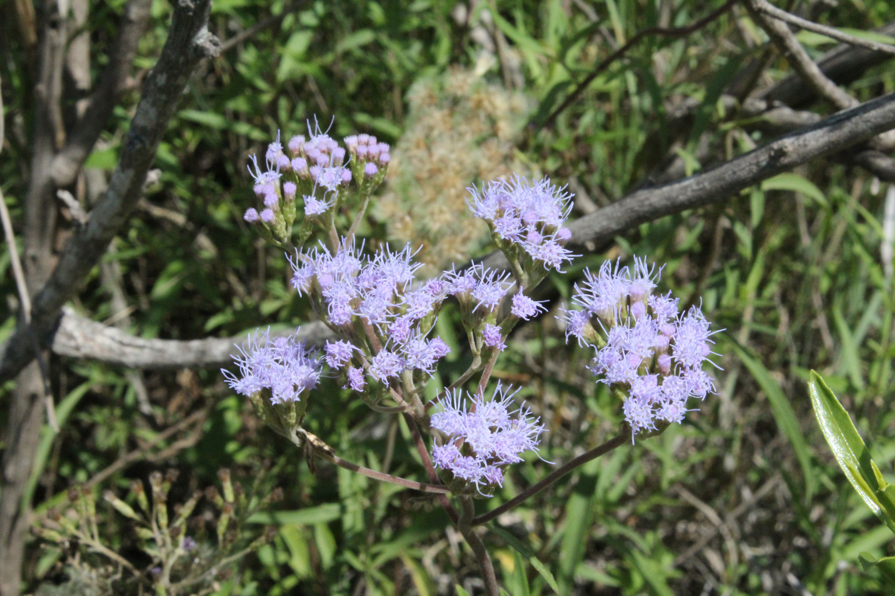
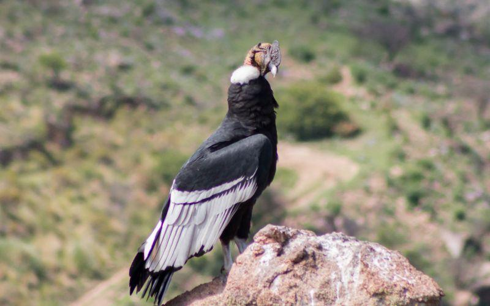
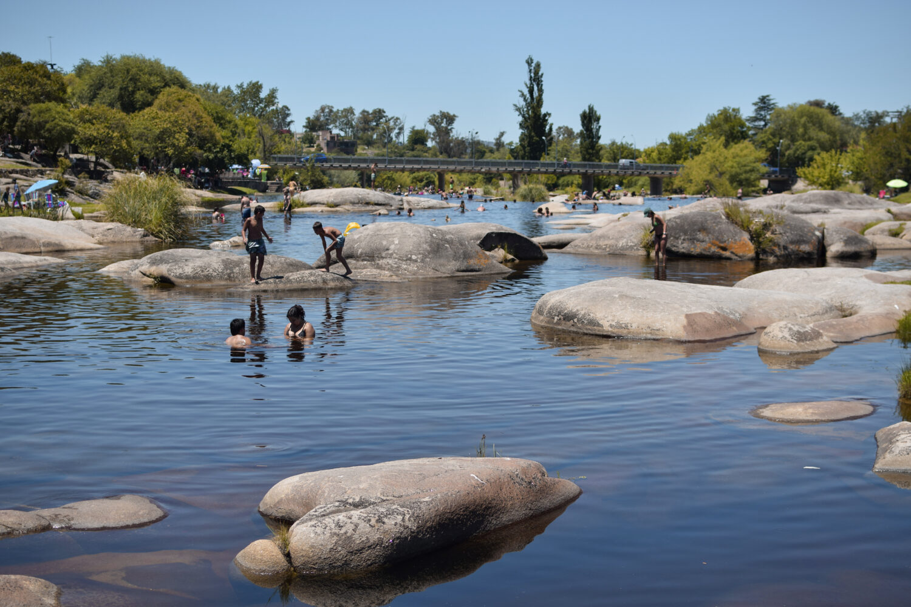
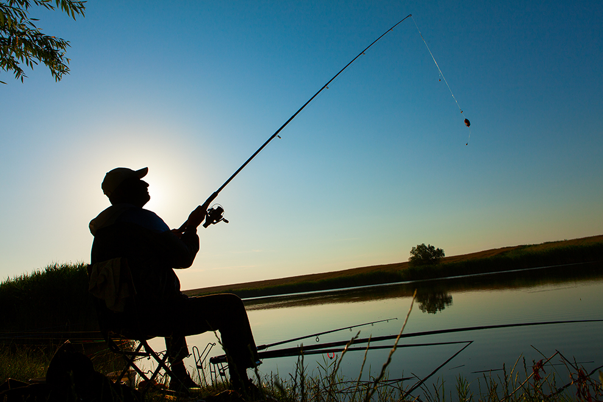
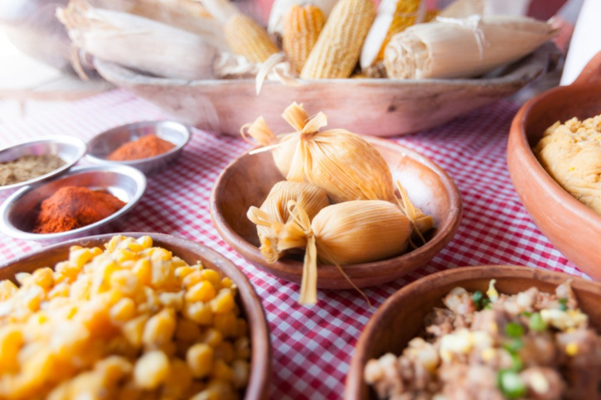

Inicio
Flora
La flora de Córdoba, Argentina, es diversa y resistente. Los imponentes quebrachos blancos y colorados dominan los bosques, mientras que el chañar y el algarrobo salpican las llanuras con su verdor espinoso. La humilde jarilla y las coloridas margaritas completan el paisaje, recordándonos la belleza y la fortaleza de la naturaleza cordobesa.
Fauna:
La fauna de Córdoba, Argentina, es diversa y fascinante. Desde el majestuoso cóndor andino en las sierras hasta el sigiloso puma en los bosques, cada rincón alberga vida única. En las llanuras, el guanaco y el ñandú deambulan libremente, mientras que aves como el cardenal y el hornero llenan el aire con su canto. Las serpientes, como la yarará y el coral, completan este ecosistema, recordándonos la riqueza y la intriga de la fauna cordobesa.
Turismo:
Córdoba, Argentina, un destino turístico cautivador con historia, naturaleza y cultura. Desde las imponentes Sierras hasta las encantadoras ciudades coloniales como Villa General Belgrano, cada lugar ofrece una experiencia única. Ruinas jesuíticas, actividades al aire libre y gastronomía variada esperan a los visitantes en esta tierra de hospitalidad cálida y auténtica esencia argentina.
Pesca:
En Córdoba, Argentina, la pesca es una experiencia única. Desde la emoción de atrapar truchas en el Río de los Espinillos hasta la calma de pescar dorados en el embalse San Roque, cada lugar ofrece oportunidades únicas para conectar con la naturaleza. Con guías expertos y una variedad de especies, la pesca en Córdoba promete recuerdos duraderos y nuevas aventuras en cada lance.
Arquitectura:

Los callejones empedrados y las fachadas encaladas de las ciudades coloniales como Alta Gracia y Jesús María transportan a los visitantes a épocas pasadas. La arquitectura colonial de Córdoba es un testimonio vivo del legado histórico de la región, con iglesias barrocas, casonas señoriales y antiguas estancias que narran las historias de quienes las habitaron.
Gastronomía:
La gastronomía de Córdoba es un festín para los sentidos, con platos que fusionan las tradiciones criollas con influencias europeas e indígenas. Desde el famoso asado argentino hasta las delicias regionales como el locro y los tamales, cada bocado es una experiencia que refleja la diversidad cultural y culinaria de la provincia.
Oficinas
Nosotros
Somos una empresa de turismo dedicada a acercar los lugares más emblemáticos de la ciudad de Córdoba a visitantes locales y extranjeros. Con más de 30 años de trayectoria en el sector, nos enorgullece ofrecer experiencias únicas y memorables que permiten a nuestros clientes descubrir la riqueza cultural, histórica y natural de nuestra ciudad.
Nuestro equipo está formado por profesionales apasionados por el turismo y comprometidos con brindar un servicio de calidad, adaptado a las necesidades y preferencias de cada viajero. Desde la planificación de itinerarios hasta la atención personalizada durante los recorridos, nos esforzamos por garantizar una experiencia enriquecedora y satisfactoria para todos nuestros clientes.
Ya sea explorando los encantadores rincones del casco histórico, disfrutando de la gastronomía local o admirando la belleza de los paisajes naturales, nuestro objetivo es hacer que cada visita a Córdoba sea inolvidable y llena de momentos especiales.
Reseñas
🌟🌟🌟🌟🌟
"La mejor experiencia turística que he tenido en Córdoba gracias
a Proyecto Córdoba. La empresa organizó todo de manera impecable
y el guía fue muy amable y conocedor de la historia local. ¡Los
recomiendo altamente!" - Sofía R.
🌟🌟🌟🌟
"Excelente servicio de Proyecto Córdoba. Nos llevaron a los
mejores lugares turísticos y nos dieron una gran cantidad de
información interesante sobre la historia y la cultura local.
¡Muy recomendable!" - Romina P.
🌟🌟🌟🌟
"Gracias a la empresa de turismo en Córdoba, pudimos ver los
lugares más hermosos de la ciudad. El guía fue muy profesional y
amable, y nos hizo sentir cómodos en todo momento. ¡Los volvería
a elegir sin dudarlo!" - Luis G.

🌟🌟🌟🌟
"Gracias a Proyecto Córdoba, pudimos ver los lugares más
hermosos de la ciudad. El guía fue muy profesional y amable, y
nos hizo sentir cómodos en todo momento. ¡Los volvería a elegir
sin dudarlo!" - Laura G.
🌟🌟🌟🌟
"Proyecto Córdoba nos organizó un tour personalizado que se
adaptó a nuestras necesidades y preferencias. El guía fue muy
flexible y amable, y nos mostró los rincones más encantadores de
la ciudad. ¡Muy recomendable!" - Paula M.
🌟🌟🌟🌟
"Proyecto Córdoba nos ofreció un servicio de alta calidad y nos
hizo sentir como en casa. El guía era muy conocedor y nos mostró
los lugares más emblemáticos de la ciudad. ¡Los recomiendo sin
dudarlo!" - Mauro P.